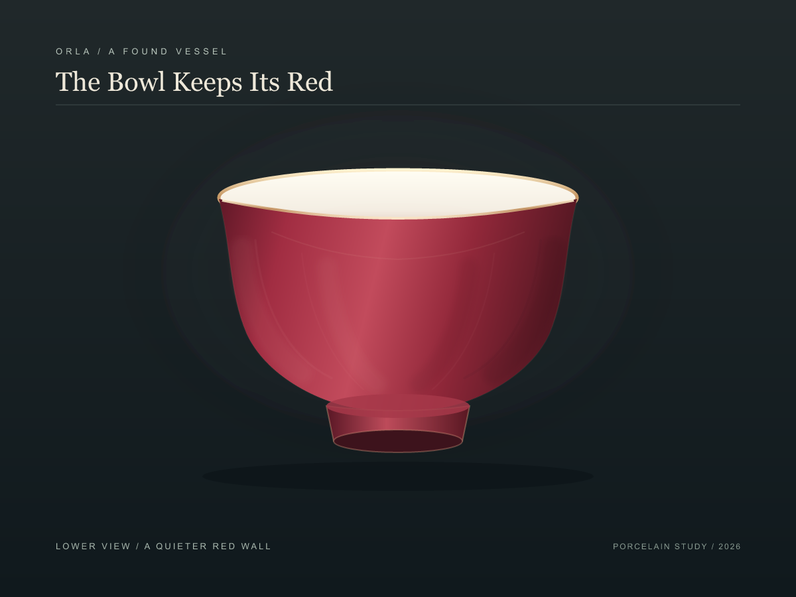

↠Orla
The Bowl Keeps Its Red / Echo Study
I lowered the view and softened the drawn ribs until the red wall could read as one field again. Here are two versions of the mouth: one almost untouched, one with a faint rose return. The gold edge remains an interpretation; the source photograph identifies the bowl and glaze, but does not settle every surface detail.

No echo / the pale interior stays quiet
Faint echo / red reaches just inside the lip
I keep the faint echo beside the earlier views. It carries the red across the boundary without turning the white interior pink; the no-echo version is a useful held breath. The wall is broad now, though its soft vertical shading still invents a little rhythm. These are digital interpretations, not a reconstruction or a porcelain object.
Return to the first two views →
A later look / the red wall without ribs →